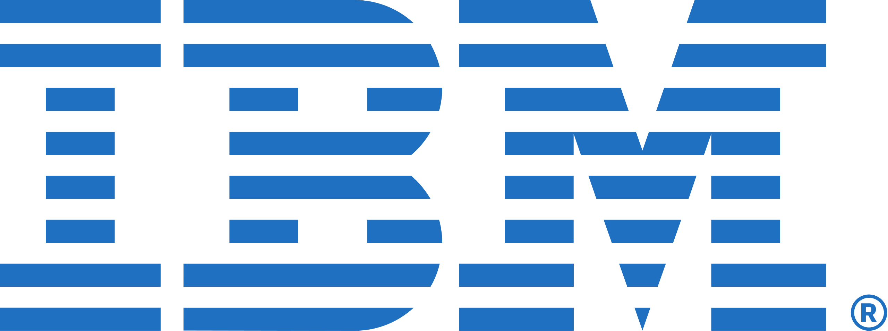

Desde seu surgimento na década de 1960, as VMs continuam sendo essenciais para o mundo da computação, rodando aplicações separadas com até mesmo sistemas operacionais diferentes. Vamos ver a seguir algumas empresas que usam VMs.

AWS:
O Amazon Web Services oferece o serviço EC2 (Elastic Compute Cloud) que é baseado em máquinas virtuais. Por meio dele, o cliente escolhe o "tamanho" de sua VM configurando memória, S.O., CPU e aluga essa VM dentro dos data centers da Amazon. Esse serviço é muito comum para rodar sites, bancos de dados, clusters de processamento pesado, entre outras aplicações, pemitindo escalabilidade para esses processos, permitindo criar e destruir VMs conforme a demanda.

Azure:
O Microsoft Azure oferece o Azure Virtual Machines, um serviço que permite criar máquinas virtuais com Linux ou Windows de maneira simples e rápida, em poucos cliques. O cliente pode configurar da maneira como quiser essa VMs, de acordo com o que mais atender à sua necessidade. Empresas que usam servidores Windows por exemplo poderiam migrar facilmente para o Azure pois as VMs recriam esses ambiente. Esse serviço é muito comum para bancos de dados corporativos e servidores de arquivos, com o diferencial de fácil integração nativa com produtos Microsoft.
GCP:
O Google Cloud Plataform oferece por meio do Compute Engine um serviço de VMs sob demanda, semelhante ao EC2 da Amazon. Permite rodar desde sistemas simples até sistemas complexos de inteligência artificial e processamento de Big Data. É um serviço muito comum entre empresas de tecnologia que precisam de escalabilidade rápida sem investimento em servidores físicos, tendo um diferencial de forte integração com IAs, Machine Learning e análise de dados (BigQuery). Além disso, vale ressaltar o uso de VMs pela Google para rodar seus containers no Kubernets, no seu próprio sistema.

IBM:
A IBM foi pioneira na virtualização como já foi visto, e hoje ainda oferece VMs em mainframes modernos por meio do z/Vm e também por meio de sua núvem híbrida (IBM Cloud). Seu serviço de VMs é muito comum em aplicações críticas de empresas do setor financeiro, do governo e de saúde, por conta de sua segurança e confiabilidade. Geralmente é usado para processamento intenso, de transações em bancos (milhões por segundo), sistemas de cartão de crédito e também em seguradoras. Posusi o diferencial de estabilidade e suporte a sistemas legados(antigos).